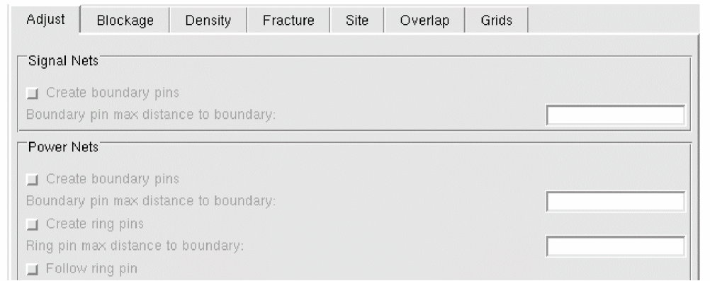
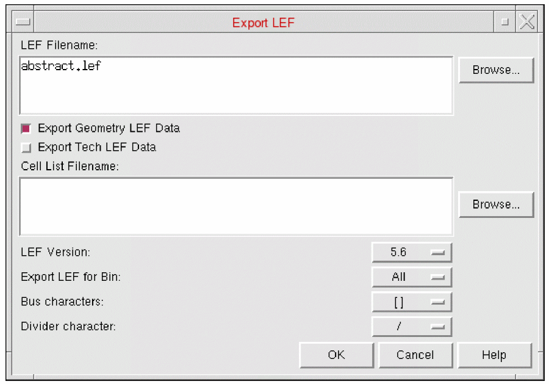

F
Tutorial: Generate Abstracts by Using the Standalone Abstract Generator
This tutorial explains the methods involved in generating abstract LEF from Virtuoso design environment data for use by place-and-route tools such as InnovusTM Digital Implementation System (Innovus). The tutorial will guide you through a typical abstract generation flow. It does not explain full Abstract Generator functionality, so if you come across any issues that you cannot resolve, contact your local Cadence Application Engineer or Cadence Customer Support directly.
Sample Library Data
The sample library material used in this tutorial can be found at the location below.
tools/dfII/samples/tutorials/abstract
This path will be referred to as <tutorial_path>.
License Requirement
You should have at least one license of Virtuoso® Layout Suite XL.
Virtuoso Design Environment to LEF Flow Overview
The process of generating abstract LEF from the Virtuoso design environment by using the standalone Abstract Generator can be summarized by the following procedures:
-
Opening a Cell library and Checking Technology Data
In this step, we will launch Abstract Generator and open a library. At this stage, we will also check the technology data.
Abstract Generator can open libraries existing in the Virtuoso design environment, referenced in yourcds.libfile, which would bypass the need for this step. -
Generating Abstract Views
Once we have a library with technology information and cell data, we can then begin to generate abstracts from the cell layout view. -
Exporting Abstract LEF
The final step is to generate abstract LEF from the cell abstracts.
Abstract Generator supports mapping DFII cellType values to the LEF MACRO and LEF58_CLASS properties. These properties are mutually exclusive. For details about LEF58_CLASS, see LEF/DEF 5.8 Language Reference.
Opening a Cell Library and Checking Technology Data
Starting Abstract Generator
-
Change the current path to where the tutorial designs are located:
cd <tutorial_dir>
Remember, <tutorial_dir> is the equivalent oftools/dfII/samples/tutorials/abstractin the Virtuoso design environment installation hierarchy. -
Launch Abstract Generator:
abstract
The Abstract Generator main window appears:
Opening the Library
In this step we will open the amspLL library which contains our tutorial data.
-
Select File – Library – Open to display the Open Library form:
-
Select the
amsPLLlibrary and click the OK button.
The library will be opened. At this point the technology data is verified. Any errors would be reported here. However, in this example no errors should be reported.
There are 17 cells in the Core bin and 11 cells in the Ignore bin. The top-level cell we are interested in is calledpllclkin the Core bin. This cell is a block so we will now want to move it to the Block bin for abstract generation. We do this because Abstract Generator sets default options depending on the bin a cell/block is located in. -
Select the
pllclkcell in the Core bin of the cell pane, then select Cells - Move. -
In the Move Selected Cells dialog box, select Block and click OK. The
pllclkcell is moved to the Block bin. -
In the Bin pane, select Block. The contents of the Block bin will be displayed to show the selected
pllclkcell.
We are now ready to start abstract generation.
Generating Abstract Views
With the layout and logical information successfully imported into Abstract Generator, we can now begin to generate an abstract view for the pllclk block.
Running the Pins Step
-
With the
pllclkblock selected, choose Flow – Pins to display the Running step Pins form. The Map tab is the first tab on view. There are existing terminals in the layout so we are not required to set any options on this tab. -
Click the Run button at the bottom of the form to create the pins view for the
pllclkblock. An orange exclamation mark will be placed against thepllclkblock under the Pins column in the cell pane. This informs us that the step has completed, but with warnings. In this example, these can however safely be ignored.
Running the Extract Step
We shall now create the extraction view for the pllclk block. For the signal pins we will maintain the pins identified by the Pins step, but for the power pins we will run connectivity extraction. This is done to make more of the power routing on the block available as pins for connecting at the next level.
- Select Flow – Extract to display the Running step Extract form.
-
Click the Antenna tab and ensure that the following process antenna calculations have been switched on:
Calculate input pin antenna Calculate output pin antenna Calculate inout pin antenna Calculate antenna metal area
-
In the Layer Assignment for Antenna regions table, we need to make sure that gate and drain regions can be recognized. Ensure that
Polyis listed in the Layer column and that its Geometry Specification is set toPoly and Oxideand Region is set to Gate. Ensure also thatOxideis listed in the Layer column and that its is set to and Region is set to .
- As we are not going to extract signal nets, ensure that the Use different layer assignments for antenna calculations only option is selected.
- All metal and via layers should already appear in the Layer Assignment for Antenna Extraction table.
-
Ensure that the table contains entries for
Cont,PolyandOxidelayers and the corresponding entries in the Geometry Specification column. These entries are required in the table to run antenna calculation. Ensure that the g-spec specified for theOxidelayer isOxide andnot Poly. This will ensure thatOxideis correctly extracted. -
Click the General tab. In the Layer connectivity field, you will see a list of triple layers.
A triple layer indicates that the first two layers in the triple are connected by the third (a via or a contact). Ensure that the metal layers are all present and that there are also triple layers specifyingPolytoMetal1andOxidetoMetal1connectivity. -
If the
PolyandOxidetriple layers have not been defined, add the following to the end of the triple layer list:(Poly Metal1 Cont) (Oxide Metal1 Cont). - Click the Signal tab. Ensure that the Extract signal nets option is not selected. The existing pin shapes are sufficient so there is no requirement for signal net extraction.
-
The final task, before running the Extract step, is to set the power net extraction options. These settings are block dependent. For the
pllclkblock, the Pins step created power pins onMetal3along the bottom edge of the block. TheMetal4vertical segments on the right edge of the block should also be modelled as power pins. -
In the Power tab, ensure that the Extract power nets option is selected. In the Layer Assignment for Power Extraction table, ensure that Create Pins is not selected for
Metal1andMetal2, and also forVia1,Via2,Via3,Via4andVia5.
-
Click the Run button at the bottom of the form to create the Extract view for the
pllclkblock.
A green tick will be placed against thepllclkblock under the Extract column in the cell pane.
Running the Abstract Step
Next, we will create the Abstract view for the pllclk block.
- Select Flow – Abstract to display the Running step Abstract form. The Adjust tab is the first tab on view.
-
Select the Create boundary pins option for Signal Nets.
In the extraction step, we did not run signal net extraction, so this should not strictly be required because the pins that were mapped in the Pins step are usually fine. However, if the pins created in the Pins step extend deep into thepllclkblock, perhaps due to text labels being mapped onto an underneath path, then it is necessary to turn these larger pins into small square pins at the boundary of the block. We do this by selecting the Create boundary pins .
For Power Nets, the power pins in thepllclkblock are neither boundary pins nor ring pins, therefore, both the Create boundary pins and Create ring pins options should not be selected.
 -
Click the Blockage tab and ensure that each metal layer is listed in the Layer Assignment for Blockages table and that their Blockage type set to Cover.
-
To create a better Abstract view, we will shrink the cover blockage away from the cell boundary to ensure that
Metal3andMetal4power pins are exposed. To achieve this, scroll to the right in the Layer Assignment for Blockages table to the Boundary column and enter 15 (microns) for LayersMetal3,Metal4,Metal5, andMetal6. - Click the Grids tab and set Grid analysis mode to off. This should be the default for the Block bin.
-
Click the Run button at the bottom of the form to create the Abstract view for the
pllclkblock. -
A green tick will be placed against the
pllclkblock under the Abstract column in the cell pane. Again, the newly created Abstract view can be inspected in the Virtuoso layout editor by selecting Cells – Edit – Abstract.
Exporting Abstract LEF
The final task in completing the generation of abstract LEF from Virtuoso design environment is to export the LEF from Abstract Generator.
- Select File – Export – LEF. The Export LEF form is displayed. By default, all information is written to the LEF file.
-
However, as we already have a technology LEF file for this tutorial, uncheck the Export Tech LEF Data checkbox to prevent technology LEF being written to the LEF file.
 -
Ensure that the LEF Filename option is set to
abstract.lef. - Change the LEF Version to be 5.5.
-
Click the OK button to export the abstract LEF for the
pllclkblock.
Theabstract.leffile will be created in the Abstract Generator run directory (by defaultabstract), which was specified when Abstract Generator was first invoked from the executable in the Virtuoso design environment. -
With the LEF file now successfully exported, close Abstract Generator by selecting File – Exit.
The same Abstract Generator run directory can be used again for future Abstract Generator sessions. You can also re-invoke the abstract executable again from the same run directory.
Return to top